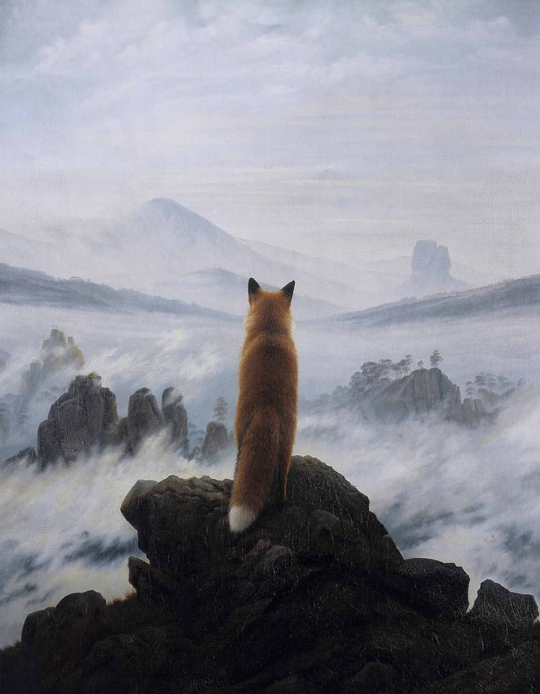

I

Le voyageur contemplant une mer de nuages-Caspar David Friedrich-1818
Au premier plan on voit un homme qui se tient debout sur un rocher en hauteur, le dos tourné au spectateur.Dans un plan intermédiaire on voit des montagnes,nuages.

Le renard sur une montagne.
Le renard est né tout seul.Ses parents l'ont abondonne des sa naissance, donc il a grandi sans famille. Depuis toujour, il cherché de l'affection il voulait trouver des animaux qui lui ressemblent,avec qui il pourrait vivre et ne plus être seul. Alors,pendant toute sa vie, il a recontré différents animaux sauvages,les loups,les ours, les singes... A chaque fois, il essayait de leur ressembler. Il imitait leur façon de vivre pour être accepté mais ça n'a jamais marché. A chaque fois les groupes finissaient par le rejeter parce qu'il n'était pas vraiment comme eux. Même s'il faisait tous les efforts possibles, ce n'était jamais suffisant. Avec le temps,il s'est retrouvé à nouveau seul. Mais cette fois, il était vieux et au lieu d'être triste, il a compris quelque chose. Il n'avait pas besoin des autres pour être heureux. Aujourd'hui, il vit seul dans les montagnes, tranquillement. Il a trouvé la paix et il ne cherche plus à être accepte par les autre pour exister.
- Titre: Le voyageur contemplant une mer de nuages
- Artiste: Caspar David Friedrich
- Annee: 1818
- Type: peinture
- Technique:huile sur toile
- Dimensions:94.4cm x 74.8cm
- Mouvement: Romantisme allemand